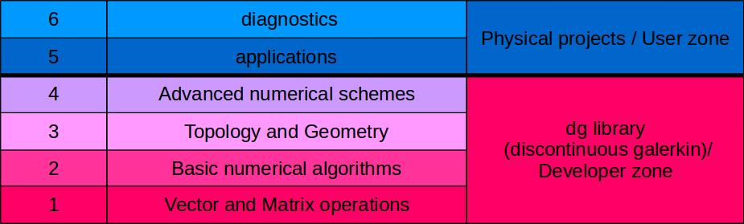

Welcome¶
This guide explains how to use Feltor. It’s structure follows the basic structure of Feltor itself as described further below. If you want, you can also follow a lecture by Matthias Wiesenberger held at the PRACE winter school on GPU programming in Innsbruck (unfortunately takes some time to load). If you haven’t done so yet, please read the Quick Start Guide first, which explains how to install the library and compile programs.
Note
This guide is generated using jupyter-book from jupyter-notebooks with the xeus-cling extension, which allows to run C++ code in a jupyter-notebook. This means that you can download and execute the notebooks yourself and we encourage you to do so and play around with the provided examples. Or, you can simply copy-paste the code examples into a textfile and compile the code yourself.
Unfortunately, xeus-cling does not generate terribly fast code and only works unparallelized so compiling yourself probably yields faster executables.
See also
You can look up any class or function beginning with dg:: in the doxygen documentation
What is FELTOR?¶
FELTOR (Full-F ELectromagnetic code in TORoidal geometry) is a modular scientific software package that can roughly be divided into six parts described as follows.

The core dg library dg/algorithm.h is a header-only template C++ library, which provides the core elements of the first four levels in the above structure
FELTOR currently ships with four extensions to the basic dg library.
dg/geometries/geometries.hadds several grid generators, magnetic field structure and the flux-coordinate independent approach (levels 3 and 4).dg/matrix/matrix.hadds matrix-function computations and a few new elliptic operators (levels 2 and 4)dg/file/file.hsimplifies common I/O operations in our programs (level 5 and 6).dg/exblas/exblas.his special because it is already included in the dg library (level 1) but can also be used as a standalone library. It provides binary reproducible and accurate scalar products on various architectures.
User Zone:¶
A collection of actual simulation projects and diagnostic programs for two- and three-dimensional drift- and gyro-fluid models
6. Diagonstics:
These programs are designed to analyse the output from the application programs
5. Applications:
Programs that execute two- and three-dimensional simulations: read in input file(s), simulate, and either write results to disk or directly visualize them on screen. Some examples led to journal publications in the past.
Developper Zone¶
The core dg library of optimized numerical algorithms and functions centered around discontinuous Galerkin methods on structured grids. Can be used as a standalone library.
4. Advanced algorithms:
Numerical schemes that are based on the existence of a geometry and/or a topology. These include notably the discretization of elliptic equations in arbitrary coordinates, multigrid algorithms and the flux coordinate independent approach in arbitrary coordinates (available through the geometries extension dg/geometries/geometries.h).
3. Topology and Geometry:
Here, we introduce data structures and functions that represent the concepts of Topology and Geometry and operations defined on them (for example the discontinuous Galerkin discretization of derivatives). The geometries extension implements a large variety of grids and grid generation algorithms that can be used here.
2. Basic algorithms:
Algorithms like conjugate gradient (CG) or Runge-Kutta schemes that can be implemented with linear algebra functions alone.
1. Vector and Matrix operations:
In this “hardware abstraction” level we define the interface for various vector and matrix operations like additions, multiplications, scalar products and so on. These functions are then implemented and optimized on a variety of hardware architectures and serve as building blocks for all higher level algorithms.